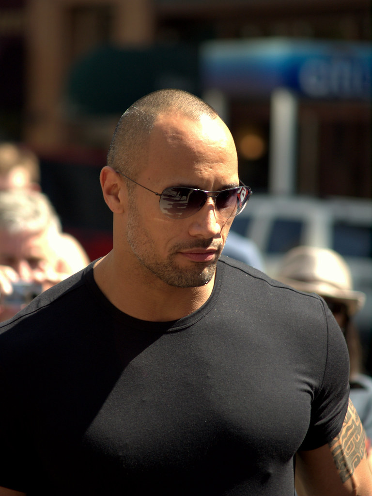

Dwayne Johnson was born in Hayward, California. He played college football at the University of Miami before pursuing a wrestling career.
The Rock has won multiple WWE championships and has been a major box office draw in Hollywood.
He is involved in various philanthropic activities and has supported several charitable organizations.
Dwayne Johnson is a proud father and a loving family man. He often shares moments from his family life on social media.
Here are some famous quotes by The Rock: "Just bring it!", "Can you smell what The Rock is cooking?", "Be humble. Be hungry. And always be the hardest worker in the room."
Dwayne Douglas Johnson, also known as "The Rock," is a retired American professional wrestler, actor, and producer. He was born on May 2, 1972.
The Rock had a successful wrestling career in WWE, becoming one of the most iconic figures in professional wrestling history.
He transitioned to a successful acting career and has appeared in numerous films, including the Fast and Furious series.
The Rock has won numerous awards and accolades throughout his career, including multiple WWE championships and Hollywood honors.
Dwayne Johnson is a proud father and a loving family man. He often shares moments from his family life on social media.
He is actively involved in various philanthropic activities and has supported several charitable organizations.